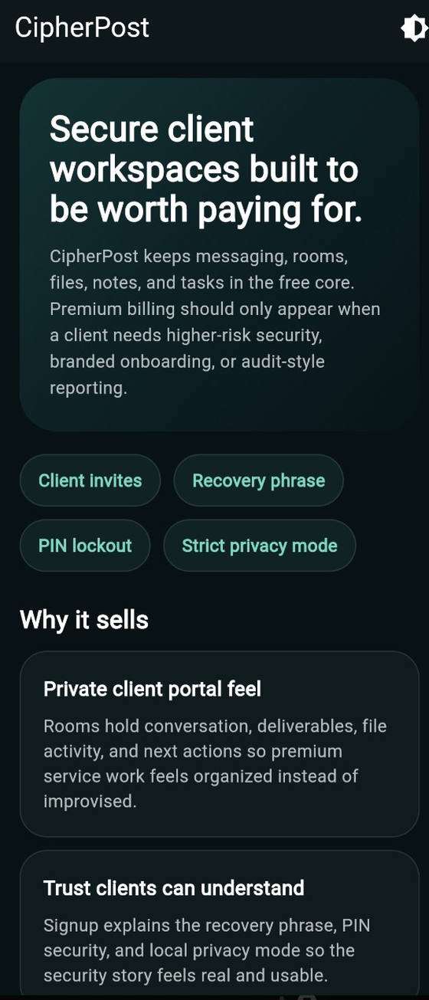

Case study · Private beta
CipherPost
Messages that stay on your device.
Encrypted messaging, calling and client workspaces where the encryption is not a marketing line. The protocol is Signal's own libsignal — PQXDH and the Double Ratchet run in the official library, and the Dart layer never implements either. Rolling your own is where most "secure" messengers fail, so it does not.
The relay is deliberately not a message database. It holds bounded, temporary ciphertext, prekey bundles, delivery state and content-free wake endpoints. Plaintext, attachments, private keys, ratchets and history live on the device and never reach it — so there is no server-side archive to subpoena, breach or lose.

Where it actually is
Android security beta — ready for controlled tester builds, not public production. Android protocol v3 uses the libsignal adapter over a dedicated method channel. iOS, desktop and web deliberately fail closed for new v3 contacts rather than falling back to something weaker, which is the right failure mode and an inconvenient one. Physical-device testing and a distribution review are still outstanding.
Saying that plainly matters more here than anywhere else on this site. A security product that overstates its readiness is worse than one that admits what is unfinished, because the claim is the thing people rely on.
Source is private while the beta is closed. ← Back to all projects